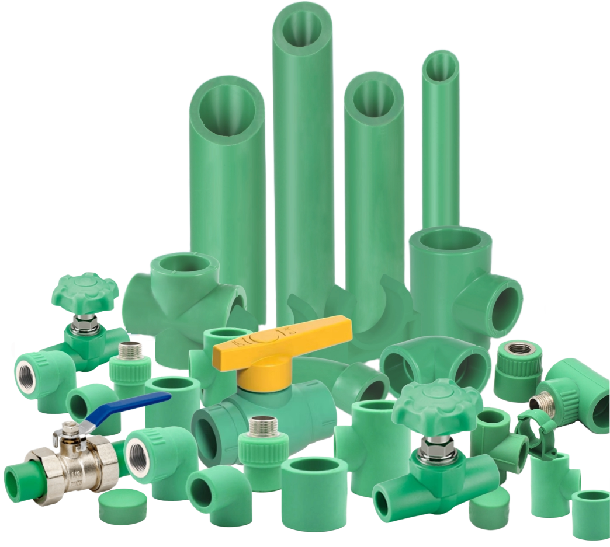

Approved documentation
Specifications and technical requirements should be verified against the latest approved Dadex documentation.
PP-R Water Supply System
A polypropylene random copolymer system for hot and cold water distribution in buildings.

Polydex is a polypropylene random copolymer (PP-R) piping system for hot and cold water distribution. The system is corrosion resistant, suitable for direct potable water contact, and welded by heat fusion to create leak-free joints.
Technical information is presented openly. Essential information is not hidden behind an accordion.
| Material | Polypropylene Random (PP-R) |
|---|---|
| Appearance | Green colour. |
| Standards & Specifications | Pipes: DIN 8077-8078 in PN 10, PN 16 and PN 20; Fittings: DIN 16962 PN 25 |
| Available Range | Diameters (OD) 20, 25, 32, 40, 50, 60, 75, 90, 110, 125, 160, 180, 200 and 250mm in standard lengths of 4m. Larger size diameters can be supplied upon request. |
| Jointing Method | Heat fusion |
Specifications and technical requirements should be verified against the latest approved Dadex documentation.
Dadex Techno Commercial Department and Sales Offices can assist with product selection and technical information.
Confirm system suitability, installation requirements and limitations for the intended application before specification.
Product literature, technical documents and drawings are available through Dadex Technical Resources. For project-specific requirements, contact Dadex Technical Support.
Contact Dadex for product information and technical assistance.